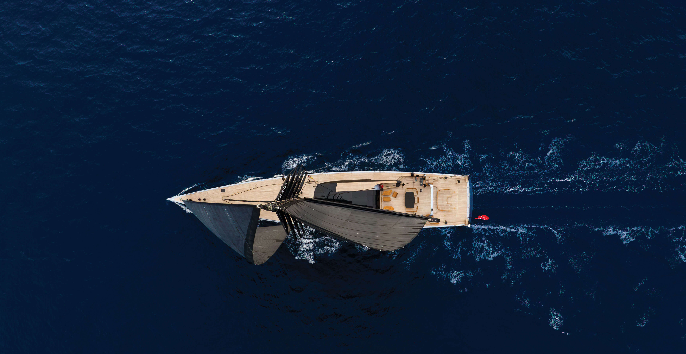
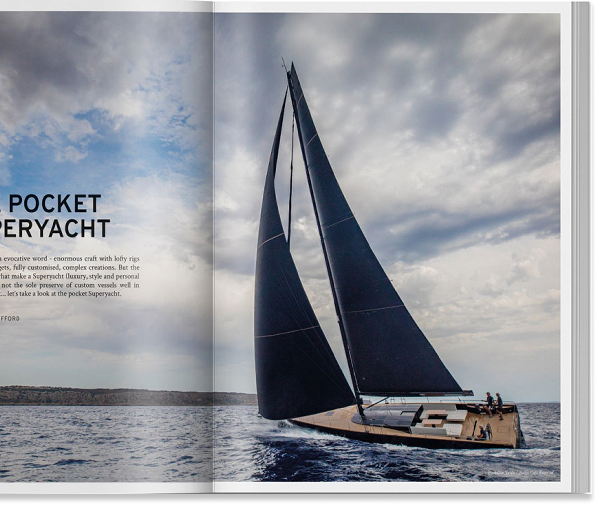
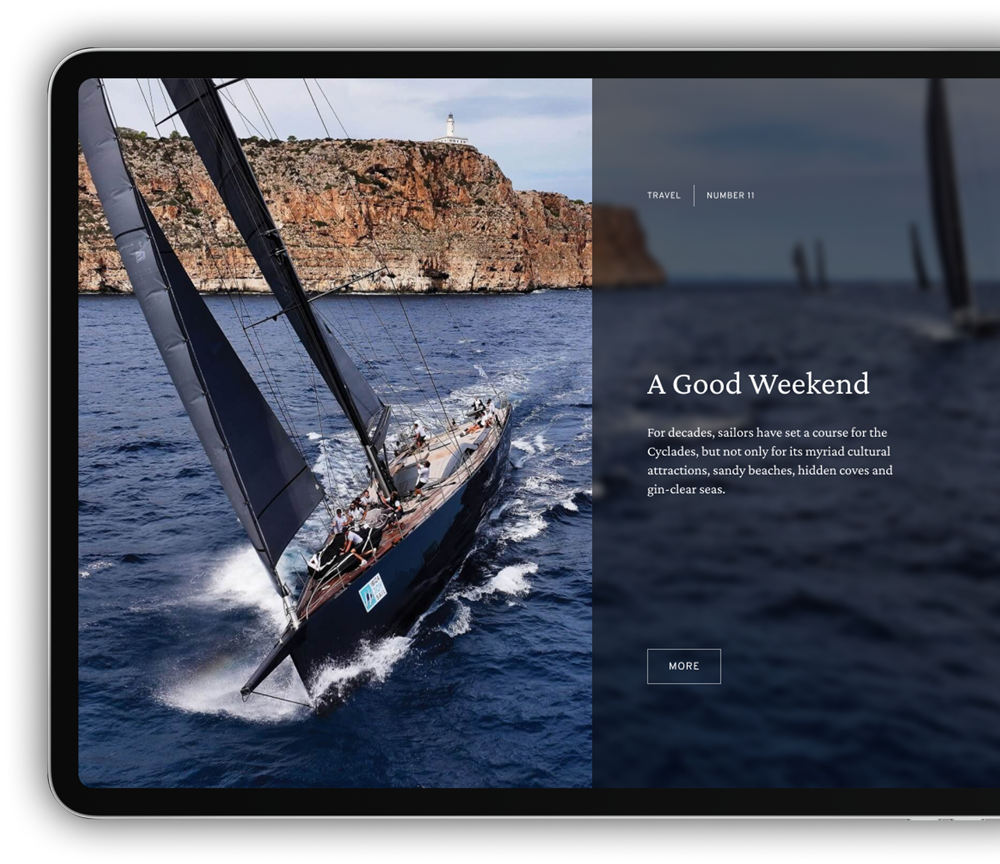
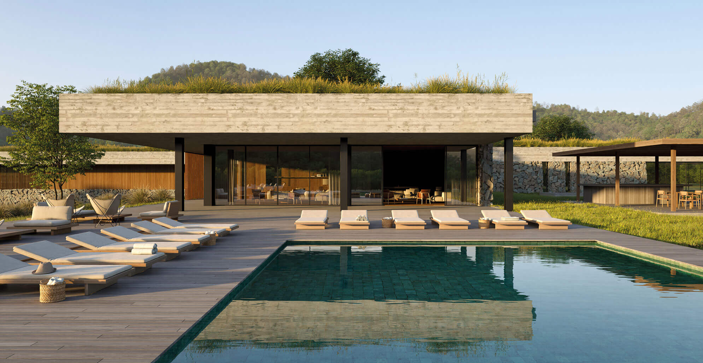
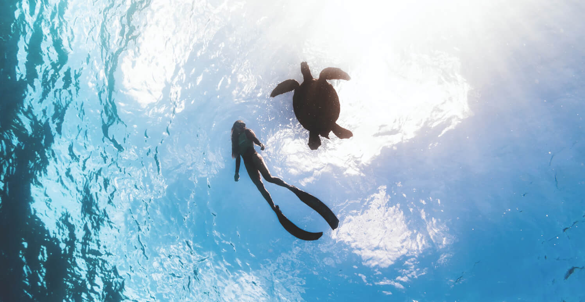

Featured
{% for card in page.cards %}
{% endfor %}

For decades, sailors have set a course for the Cyclades, but not only for its myriad cultural attractions, sandy beaches, hidden coves and gin-clear seas.

You would be forgiven for missing the launch of Sarissa back in 2023. Builder Royal Huisman kept Project 404 on the down-low...



“Architecture is a little bit like music: it’s about rhythm, silences. We don’t want our architecture to be loud,” says Juan Ignacio Ramos, the figure behind Estudio Ramos...

Responsible, light-touch travel has come a long way since the obligatory note on your pillow offering the opportunity to save water by reusing your towels....